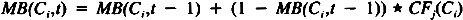
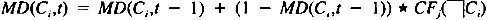

by Abraham Kandel
CRC Press, CRC Press LLC
ISBN: 084934297x Pub Date: 11/01/91
|
|
Fuzzy Expert Systems
by Abraham Kandel CRC Press, CRC Press LLC ISBN: 084934297x Pub Date: 11/01/91 |
| Previous | Table of Contents | Next |
There are quite a few fuzzy implication operators. They each have different properties. The question arises about the best properties for a fuzzy implication operator. First, it must certainly match the classical implication operator at the crisp corners. All of them do this. There are two other properties that are important to an expert system inference. They involve the case when the certainty factor for an implication relation, Ri, is equal to one and when the values for the conclusion are obtained along the diagonal with the out of bounds region. In the first case it is desired that the value for the conclusion not be one except in the crisp case. In other cases it should be less than one. This property is provided by the Lukasiewicz implication operator. Along the diagonal, which for our purposes are the certainty, premise pairs (1,0), (0.9,0.1), (0.8,0.2), …,(0,1), we would like the conclusion values to be nonzero in general. In fact, the conclusion certainties should be decreasing as the relation certainty increases. For example, when the premise value is 0.7 and the relation certainty is 0.3, we desire that our conclusion not be totally false. This property is provided by the Kleene-Dienes implication operator. This property is not, it should be noted, as important as the first one mentioned. The Gaines 43 and Modified Gaines 434 do have both these properties and, hence, are most useful as implication operators in fuzzy expert systems.
The reasons that these properties are desirable is given in the following. In the first case, it is misleading to label a conclusion completely certain when the premise which is involved in its verification has a low degree of truth. Note that it is the case in classical logic that when the premise is false, and the overall certainty of the implication relation is true, that the conclusion may be considered completely true or false. Given the lack of supporting evidence we choose to represent it as completely false. The second property indicates that it is desired that some certainty exist in a conclusion, given a premise which has some positive degree of certainty and an implication relation with a positive certainty. That it should decrease with the decreasing certainty in the relation is required, since there is no justification for a conclusion with a higher certainty than the relation it is contained within.
There is one other property which was found important in generating modus ponens. The lower bound must be taken for modus ponens generation. An expert system often must take a conservative approach in its reasoning, since this is the typical approach of experts. Therefore, we must know our lower bound from the function which we use to generate modus ponens.
For an expert system which is intended to be used in different applications, the combination of evidence method must be easily changed. This is accomplished in the Fess system by having the combination method(s) confined to a specific code unit. New methods may be plugged in without affecting the rest of the system. This feature is one of the advantages provided by the language in which Fess was developed.
Each conclusion in Fess is seen as consisting of two parts: the positive part, X is Y, and the negative part, X is not Y. Our certainty for a conclusion depends upon how much we believe in its component parts. A strong belief in the negative part with a small belief in the positive part of the conclusion will make us certain that the negative part of the conclusion may be considered true to some degree. For each conclusion the system maintains a measure of belief and a measure of disbelief in its conclusion frame. The measure of disbelief may be described as the measure of belief in the negative part of the conclusion or the negation of the conclusion.
The accrual method of evidence combination is the most generally applicable of the various methods available.16 It was chosen for the initial implementation of Fess. The method of calculating the belief and disbelief measures will be detailed in the following.
For each conclusion, denoted by Ci, there will be some relation(s), denoted by Rj, which provide the evidence necessary to decide whether to believe the positive or negative parts of the conclusion, or that no decision can be made with the evidence. With each relation Rj there will be an associated certainty factor, denoted by CFj(Ci), which indicates the strength of the evidence about conclusion Ci provided by the relation. The certainty factors of the relations used on a conclusion Ci accrue to provide us with our measure of belief in the following manner.
The measure of belief in a conclusion Ci is

where t is the current number of relations that have been used to determine Ci and MB(Ci,t - 1) denotes the belief value before the current relation was used, MB(Ci, - 1) = 0.
For convenience allow MB(Ci) to denote the value for the measure of belief function at the current t, the number of relations used to determine the belief in the conclusion. The measure of disbelief is calculated in a corresponding manner shown as follows.
The measure of disbelief in a conclusion Ci is

where t is the current number of relations that have been used to determine Ci and MD(Ci,t - 1) denotes the belief value before the current relation was used, MD(Ci, - 1) = 0.
| Previous | Table of Contents | Next |